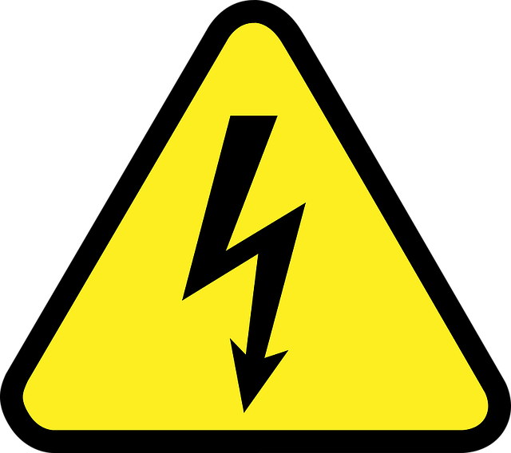
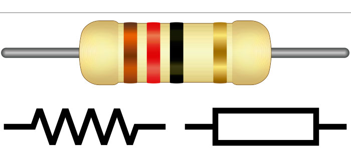

Corriente
Se mide como la tasa neta de flujo de carga eléctrica a través de una superficie o en un volumen de control. Se debe al movimiento de las cargas (normalmente electrones) en el interior del mismo. Al caudal de corriente (cantidad de carga por unidad de tiempo) se le denomina intensidad de corriente eléctrica (representada comúnmente con la letra I).
En el Sistema Internacional de Unidades se expresa en culombios por segundo (C/s), unidad que se denomina amperio (A). Una corriente eléctrica, puesto que se trata de un movimiento de cargas, produce un campo magnético, un fenómeno que puede aprovecharse en el electroimán. El instrumento usado para medir la intensidad de la corriente eléctrica es el galvanómetro que, calibrado en amperios, se llama amperímetro, colocado en serie con el conductor por el que circula la corriente que se desea medir.
Voltaje
La tensión eléctrica o diferencia de potencial (también denominada voltaje) es una magnitud física que cuantifica la diferencia de potencial eléctrico entre dos puntos. También se puede definir como el trabajo por unidad de carga ejercido por el campo eléctrico sobre una partícula cargada para moverla entre dos posiciones determinadas. Se puede medir con un voltímetro.Su unidad en el Sistema Internacional de Unidades (SI) es el voltio.
Si dos puntos que tienen una diferencia de potencial se unen mediante un conductor se producirá un flujo de electrones. Parte de la carga que crea el punto de mayor potencial se trasladará a través del conductor al punto de menor potencial y, en ausencia de una fuente externa (generador), esta corriente cesará cuando ambos puntos igualen su potencial eléctrico. Este traslado de cargas es lo que se conoce como corriente eléctrica.
Resistencia
La resistencia es una medida de la oposición al flujo de corriente en un circuito eléctrico. La resistencia se mide en ohmios, que se simbolizan con la letra griega omega (Ω). Se denominaron ohmios en honor a Georg Simon Ohm (1784-1854), un físico alemán que estudió la relación entre voltaje, corriente y resistencia. Se le atribuye la formulación de la ley de Ohm. Todos los materiales resisten en cierta medida el flujo de corriente. Se incluyen en una de dos amplias categorías: Conductores: materiales que ofrecen muy poca resistencia, donde los electrones pueden moverse fácilmente. Ejemplos: plata, cobre, oro y aluminio. Aislantes: materiales que presentan alta resistencia y restringen el flujo de electrones. Ejemplos: goma, papel, vidrio, madera y plástico.
Normalmente, se toman las mediciones de resistencia para indicar las características de un componente o un circuito. Cuanto mayor sea la resistencia, menor será el flujo de corriente. Si es anormalmente alta, una causa posible (entre muchas) podrían ser los conductores dañados por el fuego o la corrosión. Todos los conductores emiten cierto grado de calor, por lo que el sobrecalentamiento es un problema que a menudo se asocia con la resistencia. Cuanto menor sea la resistencia, mayor será el flujo de corriente. Causas posibles: aisladores dañados por la humedad o un sobrecalentamiento.
Menu
Palabras Sabias
 La mayoría de las personas son como alfileres: sus cabezas no son lo más importante. .
La mayoría de las personas son como alfileres: sus cabezas no son lo más importante. .
Jonathan Swift